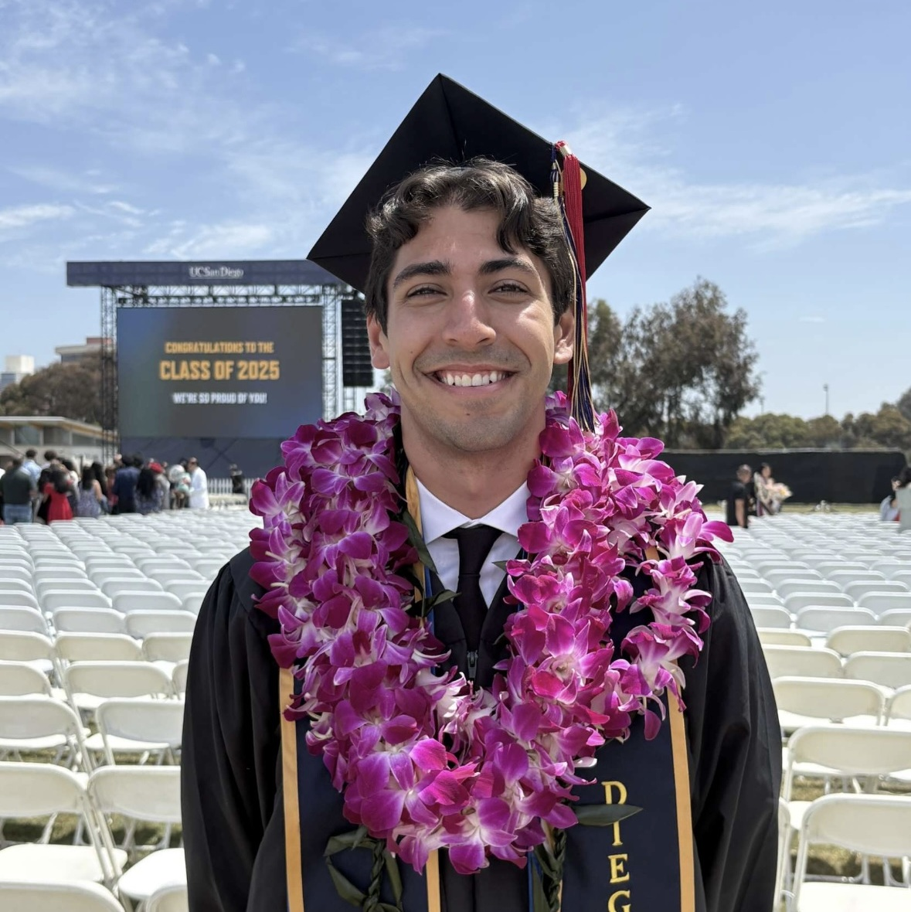

Josh Neuman
University of California San Diego - Jacobs School of Engineering
B.S Electrical Engineering - Photonics
M.S Electrical Engineering - Applied Electromagnetics
Class of 2026
About Me
I am a student at the UCSD Jacobs School of Engineering within the electrical engineering department, I recieved my undergraduate degree in electrical engineeng focusing on photonics, I am continuing my education in pursuit of a masters degree in electrical engineering with an emphasis in applied electromagnetics. I am also currently employed at ViaSat in Carlsbad, working as a satellite controller within the satellite control center (SCC). Aside from my studies and work, I enjoy running, surfing, snowboarding, and hiking.
Education

ECE 5 - Making, Breaking, and Hacking stuff
ECE 15 - Engineering Computation
ECE 17 - Object-Oriented Programming: Design and Development with C++
ECE 25 - Introduction to Digital Design
ECE 30 - Introduction to Computer Engineering
ECE 35 - Introduction to Analog Design
ECE 45 - Circuits and Systems
ECE 65 - Components and Circuits Laboratory
ECE 100 - Linear Electronic Systems
ECE 101 - Linear Systems Fundamentals
ECE 103 - Fundamentals of Devices and Materials
ECE 107 - Electromagnetism
ECE 109 - Engineering Probability and Statistics
ECE 111 - Advanced Digital Design Project
ECE 123 - Antenna Systems Engineering
ECE 135A - Semiconductor Physics
ECE 181 - Physical and Fourier Optics
ECE 182 - Electromagnetic Optics, Guided-Wave, and Fiber Optics
ECE 183 - Optical Electronics
ECE 184 - Optical Information Processing, Holography & Silicon Photonics
MAE 190 - Extreme Ultraviolet (EUV) Lithography for Chip Manufacturing
EE 40137 - RF Principles and Applications
EE 40003 - RF Circuit Design
PHYS 2A - Mechanics
PHYS 2B - Electricity and Magnetism
PHYS 2C - Fluids, Waves, Thermodynamics, and Optics
PHYS 2D - Relativity and Quantum Physics
MATH 18 - Linear Algebra
MATH 20A - Calculus for Science and Engineering I
MATH 20B - Calculus for Science and Engineering II
MATH 20C - Calculus and Analytic Geometry for Science and Engineering
MATH 20D - Introduction to Differential Equations
MATH 20E - Vector Calculus
Experience
EXAMPLE TEST BLAHBLAHBLHAH